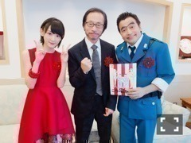

| 2016/09 14 Wed | 生駒里奈 身体の起こし方、自分の事分かってなかったんだっ！！ |
生駒です〜ヽ(・∀・)ノ
今日もこち亀公演ありましたっ！！
その前に朝こち亀展のオープニングセレモニーに参加させて頂きましたっ！！

秋本治先生と、
両さん石井さんとっ！！
改めて、感じる作品の凄さっ！！
秋本さんとお話しできましたっヽ(・∀・)ノ
サキちゃんをもっと大切に感じて行こうと決めましたっ！！
そして、
本番っ！
今日来てくださった皆さんありがとうございましたっ！！
まなつとらりんも来てくれたっっヽ(・∀・)ノ
今日ね、
舞台ってこんなに大変で凄いものなんだって気づきました！
なんの事言ってんの？
ってなるかも知れませんが、、
アイドルって、
色んな事同時進行していて、
様々なジャンルのお仕事を今させて貰っています。
そこで使うのが瞬発力、
いかにすぐ覚えてやれるかが、
大事になってきたりするこの頃。
神宮ライブもいこまちゃん、
それが生かされる場所ばかりでした。
しかし、舞台は、
毎日同じ時間を、同じ人間が、
昨日とは違う過ごし方や、身体のコンディションだとしても
楽しませるのです。
あくまで、持論です。
私は、それがまだ出来ていないのです。
特に、歌。
毎日変わります。
それは当たり前だと言われましたが。
ただ、来てくださった方にその時間を面白いっ
充実した時間を過ごしていただくためには、
私は
変わらなければならないっ！！
私はまだ、
お昼公演の時、
喉を、気持ちを起こして舞台に出る方法を知らない。
気持ちをのせる方法もまだ当てずっぽうです！
でも、
私はそれに気づかなかったのです。
それが今一番思う、
アイドルの時と、舞台の時の違い。
なるほどなって。
だから、これっぽっちと思われても仕方がないですが、。
今日わかりました。
人を楽しませるって色んな形がある。
だからこそ、色んな形に当てはまる様に自分を柔らかくしないといけないんだなって。
こんなに素敵な所で、沢山教えてくれる先輩方がいるうちに、出来る様になりたいっ！！
明日も頑張るぞ〜！！
えいえいおー！！
とりあえずっ！
観に来てくださった方で、
いこまちゃんの歌にズコーッてなった方。
正しいリアクションですっ！
すみませんっ(´；ω；｀)
いつかまた、貴方様のお耳に私の歌が届く時、
いいねと思っていただける様に頑張ります！！
ありがとうございますっ！！
へばなっ☆彡